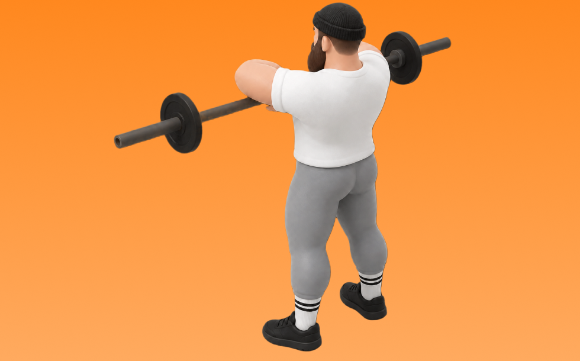

アップライトロウ

アップライトロウとは、バーベルを使って「肘を上げて引く」動作で肩（三角筋中部）、僧帽筋を鍛える種目です。高重量を扱いやすく、筋力を伸ばしやすいのが特徴で、体幹を固め、みぞおち付近へ引いて戻す動作を繰り返します。肩の厚みづくりとオーバーヘッドの押す力の向上が期待できます。
- 対象部位
- 肩
- 器具
- バーベル
- 記録形式
- 重量・回数
- 別名
- アップライトロー
YouTube動画
-
【肩筋トレ(三角筋・僧帽筋)】ダンベルアップライトローイングのやり方・フォーム・コツ | 「怪我が起こりづらい手幅」「肩を痛めない」動作をご紹介！
-
【初心者】アップライトローイングの正しいやり方 | 三角筋に効きすぎる！【ビーレジェンド プロテイン】
-
サイドレイズよりも効果的？最強のアップライトロー方法解説 ！
-
【緊急実技】三角筋に乗せるアップライトロウのコツとフォーム 【新・バズーカ岡田チャンネル】 #バズーカ岡田
-
アップライトロウで「肩が痛い」人必見！ケーブルで怪我のしにくいやり方をご紹介◎
-
【アップライトロウ】肩のトレーニングメニューから外すべき理由
-
【アップライトロウ】三角筋・僧帽筋に効かせる手幅などのフォームのコツを解説！
-
【筋トレ】肩に強烈に効く！ケーブルアップライトロウ【三角筋】
YouTubeショート
-
Upright row form I アップライトロー正しいやり方
-
バーベルアップライトロウ（Barbell Upright Row）の基本フォームとやり方
-
2017横川尚隆アップライトロウ100kg
-
肩を痛めないアップライトロウイング
-
【筋トレ初心者必見 ! |アップライトロウのやり方】日本人初ミスター・オリンピアに出場した、山岸プロが解説！ #山岸秀匡 #筋トレ初心者 #アップライトロウ
-
みなさんはケーブルアップライトロウやってますか？持田選手（おかずもち）がしっかり三角筋に効くトレーニングをレクチャーしてくれました！#筋トレ #volix #肩トレ #ちょこっと惜しい #三角筋
-
【筋トレ初心者必見 ! |アップライトロウのやり方】日本人初ミスター・オリンピアに出場した、山岸プロが解説！ #山岸秀匡 #筋トレ初心者 #アップライトロウ 横verはコメ欄
-
【肩＆背中トレ】ダンベルアップライトロウの正しいフォームを確認
-
バーベル・アップライトローの特徴（三角筋・僧帽筋）【糸井トレーナー】
-
クソみたいなフォームで高重量のサイドレイズを行うゴリラ【肩トレ】【三角筋中部】【目指せメロン肩】【ほぼほぼダンベルアップライトロー】
-
肩トレ民全員見て肩の丸み爆上がりケーブルアップライトロウ #筋トレ #筋肉番付
-
【山岸秀匡】肩の基本種目第四弾！アップライトロウ
-
ダンベルアップライトロウ（Dumbbell Upright Row）の基本フォームとやり方
-
【アップライトロウ解説】目標回数まではまず自分でやってみよう! #アップライトロウ
-
めっちゃ肩がデカくなった今やってるメニュー！#shorts
-
今日の肩トレ！#筋トレ大学生 #筋トレ男子 #gymmotivation #fitnessmotivation
-
【三角筋を使って】肩を美しく綺麗に！ダンベルアップライトロー #Shorts
-
男50歳、逆さアップライトロウで三角筋を鍛えてみる。肩トレーニング。 #shorts
-
サイドレイズのやり方🔥 #筋トレ #サイドレイズ #肩トレ #筋肉社長
-
横川尚隆トレーニング アップライトロウ【切り抜き】#shorts
-
正しいサイドレイズ4つのポイント #筋トレ
-
upright row 75kg
-
こんなサイドレイズ今すぐやめて #short #youtubeshorts #プロテイン #筋肉博士 #筋トレ大学 #山本義徳 #サイドレイズ #肩トレ
-
正しいダンベルロウ4つのポイント #筋トレ
-
スクワットの正しいやり方【筋トレ】
-
【肩トレ】アップライトローの意識ポイント
-
正しいショルダープレス4つのポイント #筋トレ
-
サイドレイズを効かせるコツ！ #Shorts
-
ダンベル・アップライトローの特徴（三角筋・僧帽筋）】【糸井トレーナー】
-
持田選手にサイドレイズについてレクチャーしていてもらいました！次はどの種目の解説をやってほしいかコメントしてね！#筋トレ #volix #トレーニング #workout #肩トレ #ちょこっと惜しい
動作方法
- 対象部位の力を抜かずに構える
- 反動を使わず、可動域を丁寧に使う
- 戻し動作をゆっくり行う
動作ポイント
- 可動域を急に狭めない
- 対象部位の緊張を保つ
ワンポイントアドバイス
- 重量よりも肩の軌道を安定させる
- 首まわりの力みを減らして行う
目的別回数設定
目的や体力に応じた一般的な目安です。無理のない範囲で調整してください。
- 筋力アップ
- 1〜5回
- 筋肥大
- 6〜12回
- 持久力アップ
- 13〜20回
YouTube動画について
動画はYouTubeの公開情報をもとに表示しています。内容は投稿者によるもので、Biggrによる監修ではありません。
アプリを入手
筋トレやトレーニングの記録はBiggrにお任せください。今すぐ無料で使い始められます。